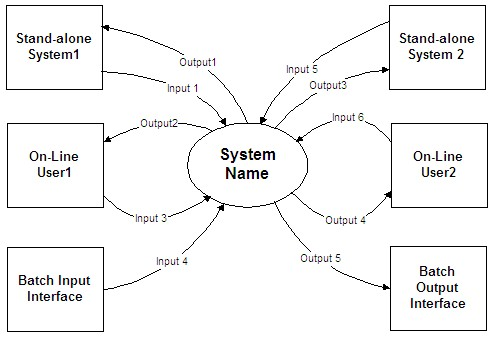
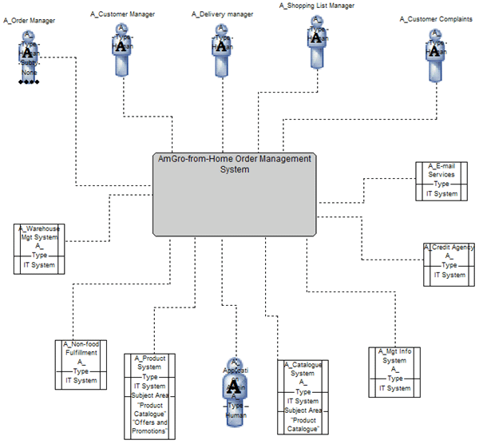

| Artifact: System Context (ART 0651) |
 |
|
The purpose of this work product is:
|
| Roles | Responsible: | Modified By: |
|---|---|---|
| Tasks | Input To: | Output From: |
| Process Usage |
|
|
| Main Description | Usually shown as a diagram, the System Context work product representation defines the system and identifies the information and control flows that cross the system boundary. The System Context highlights several important characteristics of the system: users, external systems, batch inputs and outputs, and external devices.
The objects within the system boundary define the scope over which the development team has some control. The users and systems outside the boundary of the system are those that affect the system operation and development but are beyond the control of the developers within the currently defined scope of the project. Due to this scoping aspect of the work product, during early stages of a project it is useful to review this work product with the client to assist in delineating development team and client responsibilities. Note that the System Context may limit the breadth of its coverage to emphasize just one class of external interfaces, for example, only the interfaces to external systems. Additionally, the details required at lower levels of elaboration will depend upon what interfaces are to be subsequently developed. |
|---|---|
| Notation | The diagram below shows information flow into and out of the system. Note that in an actual diagram instance, each information flow would be labeled with a descriptive name to help the reader understand the purpose of the interface. Each flow then should be described in more detail in narrative form to supplement the diagram. At a minimum, the following information should be provided for each flow:

Note for pre-sale solution design (Team Solution Design users): The System Context may be developed as
a free form diagram (illustrated in the diagram above), or as a more formal set of views. These views are based on four
viewpoints which reflect various combinations of Functional, Operational, physical and logical. The possible views
include:
The following diagram illustrates a Logical Functional view. For more information on these additional viewpoints and associated notation, consult the associated guidance. These viewpoints employ formal concepts such as Exchange and Access Mechanism. For an explanation of these and other related concepts, refer to the IBM System Description Standard. Development of these more formal views is aided by the use the SA4TeamSD configuration of IBM's Rational System Architect.  |
| Templates | |
|---|---|
| Examples |
The following guidance is suggested:
Note for pre-sale solution design (Team Solution Design users): Using the free form version of
the System Context should be helpful in highlighting interface requirements necessary to quickly establish feasibility
of using a particular technology to implement the proposed system. The free form diagram is most likely to resemble the
Physical Operational view (as discussed in notation above). Using more formal viewpoints should be considered for more
complex designs. In such cases, it may be very difficult to account for all necessary design considerations without
examining all formal viewpoints. It may be more productive to work out those issues in the initial System
Context rather than discovering them in later design work and then correcting the System Context. Enterprise Architecture Influence: Existing enterprise architecture is an important influence on solution design. See the associated Guideline: The Role of Enterprise Architecture in Solution Design for guidance on EA artifacts (or their equivalents) that should be considered when developing this work product. |
| Reasons for not needing | The System Context need not be developed in the following circumstances:
|
|---|---|
| Representation Options | Several notations can be used to diagram the component of System Context. Most often they are represented as a level-0 process model, although static object models or functional models can represent them. Diagrams are generally better than text for this kind of overview material. |
| Guidelines | |
|---|---|
| Tool Mentors | |
| Whitepapers | |
| Estimation Considerations |
| Content Lead | tvoss@sg.ibm.com |
|---|---|
| Change Date | Thu Mar 17 09:15:32 IST 2011 |
| Revisions | 1.2, August 1999, A new template was applied, and the document was edited for grammatical errors, style and content.|1.3, September 1999, Merged with MethodBlue ‘Current Application Documentation’ WPD to create ‘Current System Context Documentation’. |1.4, December 1999, Revised WPD to separate data-related content and context from System Context. |3.0, January 2000, MIFP published version – no changes. |4.1.1, August 2002, Edited to comply with intellectual property guidelines including R4 versioning scheme. |4.1.2, June 2004, Added security context as a requirement. November 2008 - baseline version|July 2010 - Updated to conform to formalisms expressed in System Architect tooling|May, 2011 - added guidance on EA influence |
© Copyright IBM Corp. 1987, 2016 All Rights Reserved |